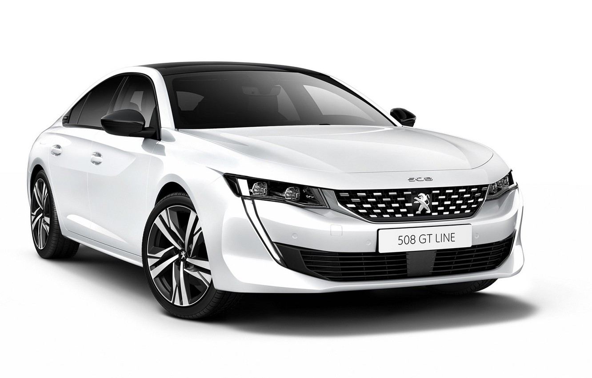
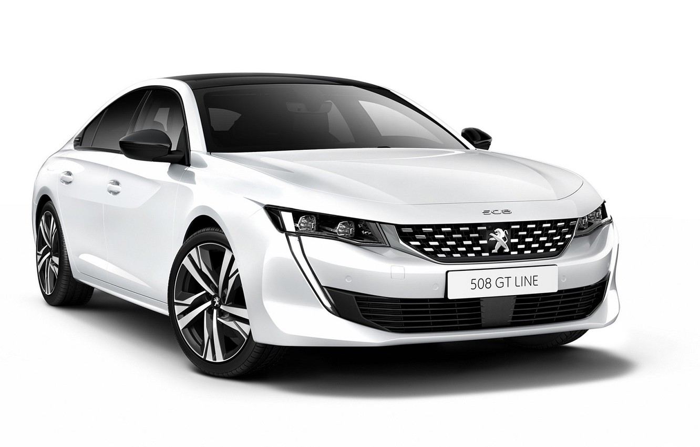

Märket
Renault S. A., är en fransk multinationell fordonstillverkare med huvudkontor i Boulogne-Billancourt. Idag ingår även märkena Dacia och Renault Samsung Motors i koncernen.
Historia
Renault har fått sitt namn efter Louis Renault, som byggde sin första bil 1898. Tillsammans med sina bröder Fernand och Marcel bildade Renault 1899 företaget "Renault Frères" (Bröderna Renault) som anställde 60 människor. 1903 ökade Louis andelar i företaget på grund av brodern Marcels död i en tävlingsolycka strax innan Bordeaux i Paris-Madrid-rallyt. Den tredje brodern, Fernand, drar sig ur 1908. Louis Renault blev nu ensam ledare av företaget som nu ombildas till "Automobiles Renault".
 

Märket
Peugeot, fransk biltillverkare som ingår i PSA Peugeot Citroën. Peugeot är mest känd för sin biltillverkning men finns även som cykel- och skotermärke och kryddkvarnar.
Historia
Peugeot grundades av familjen Peugeot. 1810 startade bröderna Jean-Frédéric och Jean-Pierre Peugeot ett stålverk för tillverkning av sågblad och klockfjädrar.[1] Man tillverkade även strykjärn, kaffekvarnar, symaskiner och mycket annat. Än idag tillverkas peppar- och kaffekvarnar. När cyklar kom på modet upptogs även sådana 1885 i firmans produktion på Armand Peugeots initiativ.
Efter andra världskriget började återuppbyggnaden av koncernen. Peugeot 203 kom 1948 och blev direkt en framgång. 1955 kom 403 som blev den första massproducerade modellen. 403 var den första Peugeot som ritades av den italienska designfirman Pininfarina. En ny stor framgång blev 404 som var populär över hela Europa


Märket
Citroën är ett franskt bilföretag, grundat 1919 av ingenjören André Citroën (1878–1935). Citroën har traditionellt tagit fram egensinniga och mycket tekniskt avancerade bilar
Historia
André Citroën skapade en speciell kuggtyp som gav säkrare kugghjul. Kugghjulstypen kallas pilkugg och är vinkelskurna på ett sätt som gör dem självcentrerande och samtidigt tystgående. Uppfinningen blev sedan logotypen för Citroën. Under 1930-talet kom Citroëns första storsäljare.
På franska uttalas bilmärket /sitråänn/. Prickarna över e:et markerar att e-et inte skall uttalas som ett nasalljud, samt att det efterföljande n-et ska uttalas som ett vanligt n-ljud. Flertalet svenskar uttalar dock Citroën /sitråäng/ med eller utan nasalljudsändelse.